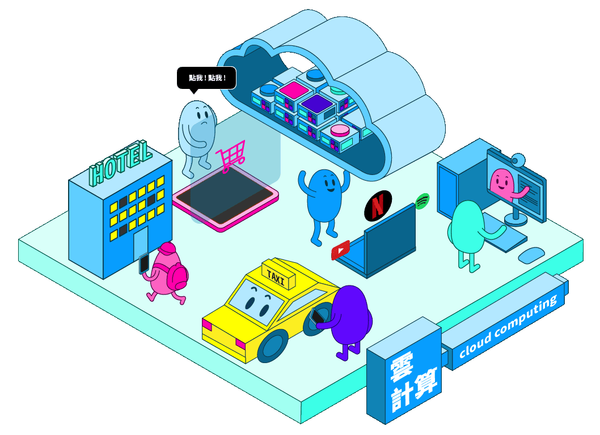

恭喜您完成雲計算的探索

恭喜您完成雲計算領域
已經完成第 4 / 6 區
您可以選擇繼續完成其他
或前往填寫詳細資料
※ 點選圖片中的場景，會有意想不到的效果哦
雲計算是一種基於網際網路的運算方式，通過這種方式，共享的軟硬體資源和資訊可以按需求提供給電腦各種終端和其他裝置，使用服務商提供的電腦基建作運算和資源。雲計算依賴資源的共享以達成規模經濟，類似基礎設施（如電力網）。服務提供者整合大量的資源供多個使用者使用，使用者可以輕易的請求（租借）更多資源，並隨時調整使用量，將不需要的資源釋放回整個架構，因此使用者不需要因爲短暫尖峰的需求就購買大量的資源，僅需提升租借量，需求降低時便退租。服務提供者得以將目前無人租用的資源重新租給其他使用者，甚至依照整體的需求量調整租金。
※ 本轉載之影片內容均用於非商業用途。純粹為教育、非營利等合法目的，而影片之之著作權、所有權與智慧財產權，包括內容、文字、圖片、聲音、影像等均為台灣金融研訓院所有。
數位科技如AI、區塊鍊及雲計算等快速發展，改變了人們的生活模式，導致未來生活必須與數位科技深度融合。
書香文化教育基金會(以下簡稱本會)成立以來，一直以提昇教育水準與閱讀素養為宗旨，為配合數位科技的發展趨勢，特規劃「六大科技領域閱讀心得徵文活動」，希望透過科技閱讀，使高中職生與大專學生能對新興科技有基本的認識與瞭解，開啟學子們對數位科技的興趣，促使年輕一代對未來有更多想像，能善用數位科技，以創造更美好的生活。
面對越趨競爭的環境，自我進修已成為顯學，加上網路的幫助，線上教學平台如雨後春筍般湧出，讓我們不出門也能學天下事。身為一名好學生，也該知道這些知識存儲，以及同步註解的強大功能，也是雲端的功勞。
身為現代人，3C 裝置裡肯定有 Spotify、Netflix 等串流娛樂平台，我們愛用的原因，可不單純是有較完整的資料庫，而是其強大的推薦系統，讓我們不需花時間尋找歌曲，而是點選系統推薦的歌單，便可以輕輕鬆鬆找到合適的曲目。
便利的叫車平台、習以為常的悠遊卡，其實背後也有各自的雲端平台撐腰。長年累積的數據，透過平台延展的功能，將協助未來分析高峰時間點與地點，合理分派車輛並避免擁擠地段，讓我們減少塞車的困擾，也更能準時到達目的地。
可知道旅行必備的民宿網站 Airbnb 也是雲端的愛用者嗎？還記得好幾年前，看個跨國網頁還要等待進度欄的日子嗎，透過雲端服務，跨國網站可以快速連線，讓你從 Airbnb 尋找歐洲度假民宿不再耗時許久，拖累度假的好心情。
在網購市場蓬勃發展下，電商產業可謂蒸蒸日上。不管是網站平台存儲、推薦系統或搜尋引擎，早就已經與雲端服務結合一體，給予全面性的服務，讓業者能更專注於商品或行銷差異上，以創造更多獨特的服務。作為消費者的我們，也因雲端便利受益，進而獲得多樣化的商品。